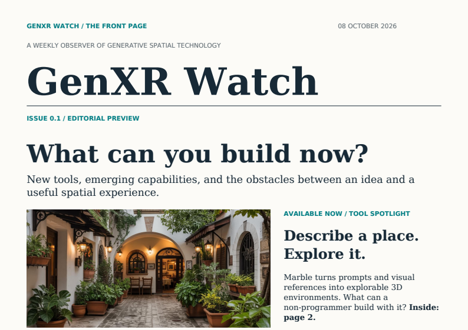

Issue 0.1 · Editorial Preview
What can you build now?
Marble turns prompts and visual references into explorable 3D environments; World Labs' Atlas aims beyond the still scene. The opening editorial issue of GenXR Watch.